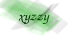

Contacting David A. Wheeler
You can contact me at my email address, in fact,
I gladly welcome personal email intended specifically for me!
Kudos, questions, & corrections are all welcome.
Please read below for how to contact me, with caveats.
TEMPORARY PROBLEM
I have a temporary problem with my email account, so you may get
"550 relay not permitted".
Please retry after a bit.
To contact me ASAP, email my work address, dwheeler AT linuxfoundation DOT org.
Just link to my material - do not bother me with permission requests
Please create and publish hypertext (URL) links to anything
on my site — the more the better!
Please don’t bother me by asking for my permission;
you already have my permission.
In fact, please don’t bother anyone asking for permission to link
to their material, because you can link to any legal material you want to.
In April 2000, Federal Judge Harry L. Hupp’s ruling on deep
linking Ticketmaster vs. Tickets.com, Inc, 2000 U.S. Dist LEXIS
12987 (D. Cal. 2000) stated that, “hyperlinking does not itself involve
a violation of the Copyright Act... since no copying is involved”.
When there were only a few people on the Internet, asking for permission was
pointless but harmless.
But nowadays, useless requests for permission have become a serious waste
of everyone’s time.
If you want to link to my site, and
your attorneys tell you that permission is required,
please try to replace them with competent attorneys.
If you cannot replace them, then please contact me.
I can sign papers if you really need it,
but I expect to be compensated for my time.
If the agreement is short and clear, my usual fee for
signing a link permission request for a commercial organization is $50.
Make sure you have the right person
Please make sure you really intend to talk with me.
I’m not:
- David E. Wheeler, who develops
Bricolage (an OSS/FS CMS package). We both use Perl, and both develop FLOSS programs.
- David John Wheeler (deceased) who
invented the
TEA and XTEA encryption algorithms and co-invented the subroutine.
- David M. Wheeler, who wrote the
ACSAC 2001 paper
“Java Security Extensions for a Java Server in a Hostile Environment”
(I have written an
ACSAC 2005 paper on countering
trusting trust, a
Java security tutorial, and
a
book on how to write secure programs).
- Dave Wheeler, who specializes in Microsoft’s .NET
stuff (Dave writes training courses, books, and articles about .NET).
I never go by Dave, and
I always use my middle initial (A) in written material -
hopefully that will help people distinguish between us.
Do not send me a resumé
Do not send me a resumé; I will delete it unopened.
If you want a job with my employer, send your resumé there.
How to contact me
As long as you aren’t sending me spam,
my email address is “dwheeler”,
followed by the “at” sign,
followed by “dwheeler.com”, and
please include my current ham password (email password)
somewhere in the subject line. My current ham password is:

Other accounts:
- Twitter: drdavidawheeler
- GitHub: david-a-wheeler
Email privacy: None by default
I assume that messages sent to me may be shared with the
public unless you tell me otherwise.
I often keep private email private, as a courtesy to the sender,
but I don’t think I’m legally obligated to do so.
Please let me know (in the email)
if you really want me to keep something private; I get
a lot of email, and if you can’t take the time
to tell me “please keep this private”, please
don’t expect me to take the time to keep it private either.
I simply don’t have the time to constantly email back to everyone who
sends me an email, just to find out if I can post it.
Courts and government agencies typically work the same way; they
typically require senders to mark stuff that’s private / confidential /
whatever when it’s sent, because it’s too hard to handle things otherwise.
Sometimes I’ll keep messages private because I can guess that you intended
for them to be private.
But don’t expect me to do so; I’m only human,
and I will guess wrong sometimes.
If you want me to keep your message private, tell me that in your message.
What’s this ham password stuff?
The ham password is simply a password that shows me that you’re
not an automated system sending me unsolicited bulk email (”spam”).
You can surround the ham password with parentheses to make it clearer.
You are not permitted to send unsolicited bulk email
(UBE, commonly referred to as spam)
to any of my email addresses, or to sell my email addresses to people who do.
Why do I have an ham password?
Basically,
I receive a horrendous amount of spam, so I use various filters
and automatically throw away, without review,
all email that looks like spam.
I’m sorry, but it has to be that way.
Including my ham password in a subject line
is not a guarantee that I’ll see it, but
it greatly increases the odds.
Be sure that your message doesn’t look like spam!
For example, use a very specific subject line
(not “hi”, URGENT, a blank line, or other nondescript things).
Send the message as ordinary text; I normally ignore HTML text, and
messages with just a URL will be trashed too.
Use English; I don’t read anything else well
(my technical French is only tolerable), and I get a lot of
non-English spam.
Never send me executable attachments like “.exe” files;
those are immediately tossed
(no one should ever execute arbitrary code sent by email, since
email is easily spoofed and malware can send email from
a compromised machine).
Useful attachments (like patches to my source code)
are very welcome,
but the main body of your text will need to convince me that
I should open the attachment.
When in doubt, I throw it out.
Placing the ham password in the body of the message will not help;
a spammer could include lots of guesses in a message body.
The ham password only has an effect if it’s in the subject line,
and due to subject line lengths (which I can impose!),
they can’t do much automated
guessing without sending a ton of messages (and I would notice that too).
Once spammers start exploiting a ham password, I just change it.
If you’re interested in learning more about my approach to countering spam,
see my essay
Countering Spam Using Ham Passwords (Email Passwords), as well as my background essay on
stopping spam.
You’ll notice that the image above is a simple kind of
Captcha, a test to
determine if the reader is human or not (to counter automated email
address capturing tools).
By the way, never send email to
badaddress@dwheeler.com.
That’s a dead giveaway that you’re a spammer, because no one has a
legitimate need to send email there.
Don’t worry, I’m aware that spammers often forge the “from” address.
Warning to spammers
Spam is any unsolicited bulk email. If I didn’t sign up for your list
(or in some other way specifically authorize you to send me information),
and you’re sending the same logical message to more than a thousand
people, you’re a spammer.
Spammers are by definition unethical, and in many locales criminal;
please do something positive for the world instead!
Legal threats
 I reserve the right to publicly publish any legal threats sent to me,
without permission of the sender (even if the sender says it’s private).
This is to encourage the ridicule, scorn, and shaming of people who
send me nonsense legal threats.
I know my rights; see
Chilling Effects
and the
EFF’s Legal Guide for bloggers
for more.
I reserve the right to publicly publish any legal threats sent to me,
without permission of the sender (even if the sender says it’s private).
This is to encourage the ridicule, scorn, and shaming of people who
send me nonsense legal threats.
I know my rights; see
Chilling Effects
and the
EFF’s Legal Guide for bloggers
for more.
For purposes of alleged copyright infringement,
I am the agent for DMCA safe harbor complaints about this site.
Look ma, I have a home page!
Feel free to
visit my home page.